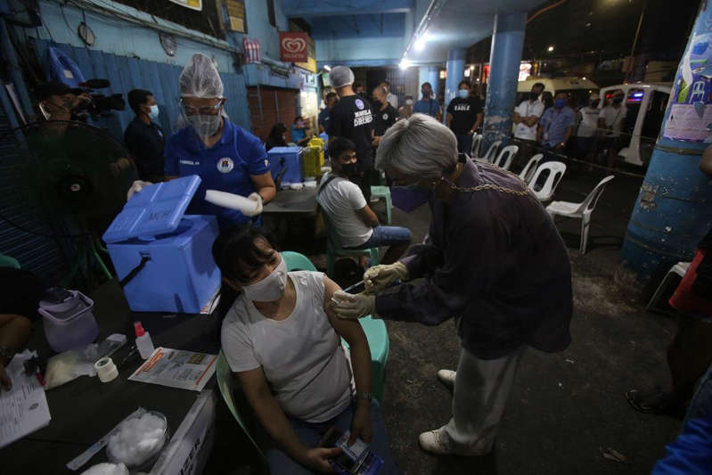

Covid19-Pandemic News >Philippines logs 3,572 COVID-19 cases from March 14–20, 2022.
Author: Giselle Ombay | March 21, 2022
Manila Vice Mayor Honey Lacuna, a medical doctor, administers a COVID-19 vaccine booster shot to a vendor during the Manila City Health Department's scheduled booster drive at Divisoria Market on Wednesday evening, Jan. 5, 2022. DANNY PATA
The Philippines on Monday recorded a total of 3,572 new COVID-19 cases from March 14 to March 20, 13% lower than the cases reported last week.
According to the Department of Health’s (DOH) weekly case bulletin, the daily case average for the week was 510.
There were also 415 new cases logged on Monday, the DOH said in a later update, bringing the nationwide tally to 3,674,694.
The country’s active case count decreased to 45,021 from the 45,201 recorded on Sunday, with 577 new COVID-19 infections.
Data also showed that 805 severe and critical cases are currently admitted.
Of 3,473 ICU beds, 17.8% were occupied while 16.6% of non-ICU COVID-19 beds were in use.
Of the new cases this week, there was only one more case tagged as severe or critical cases.
Meanwhile, more than 65.1 million individuals or 72.41% of the government’s target population are now fully vaccinated against COVID-19.
The DOH said 11.5 million have received their booster shots.
At least 6.5 million senior citizens or 75.31% of the target A2 population have also received their primary vaccine series.
A total of 3,571,397 people have been counted as recoveries, while the death toll climbed to 58,276.
According to the DOH, there were also 655 more verified deaths last week.
Of the 655 deaths, 97 occurred in March 2022 (14.8%), 122 in February 2022 (18.6%), 81 in January 2022 (12.4%), 7 in December 2021 (1.1%), 29 in November 2021 (4.4%), 101 in October 2021 (15.4%), 100 in September 2021 (15.3%), 45 in August 2021 (6.9%), 15 in July 2021 (2.3%), 13 in June 2021 (2.0%), 6 in May 2021 (0.9%), 6 in April 2021 (0.9%), 1 in March 2021 (0.2%), 5 in February 2021 (0.8%), 8 in January 2021 (1.2%), 2 in December 2020 (0.3%), 5 in November 2020 (0.8%), 5 in October 2020 (0.8%), 2 in September 2020 (0.3%), and 1 in August 2020 (0.2%) due to late encoding of death information to COVIDKaya.
Further, the regions with the most cases in the past two weeks were the NCR with 2,034 infections, Region 4-A with 926, and Region 6 with 705.
A total of 14,645 individuals were tested as of March 20, with 296 laboratories being able to submit data.— LDF, GMA News
Tweet this article
"News That Hits Home, Hundred Stories, One Truth"
Copyright © Calacday & Escanilla News 2022. All Rights Reserved.